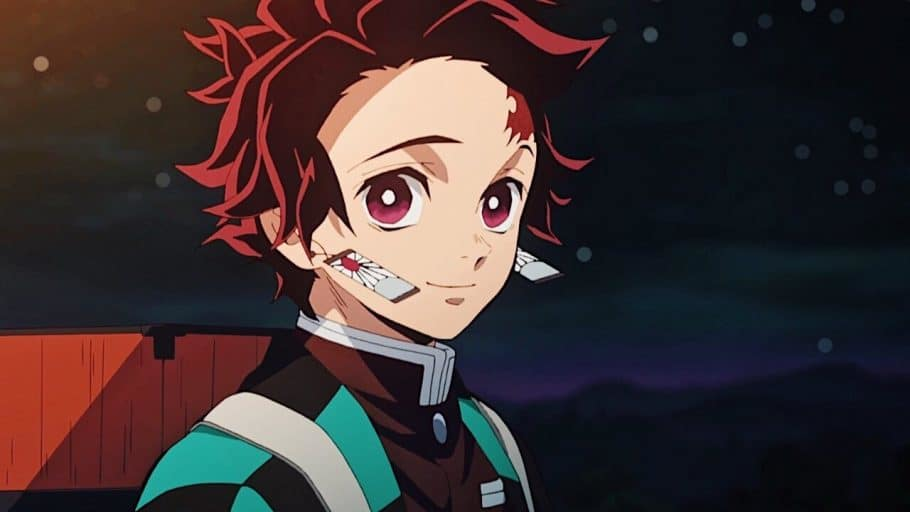
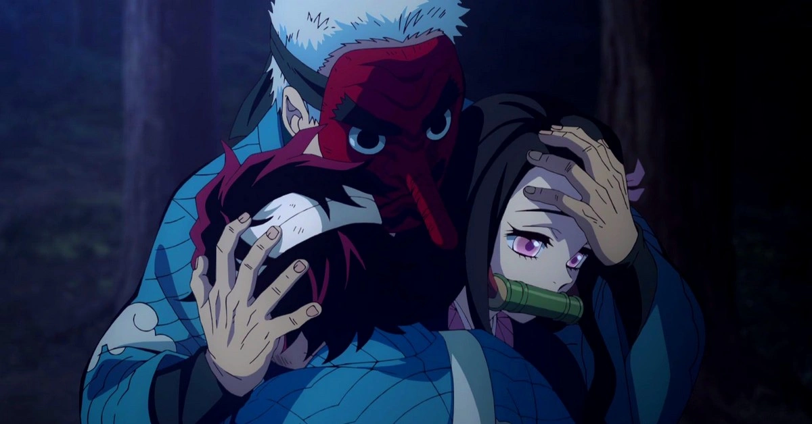
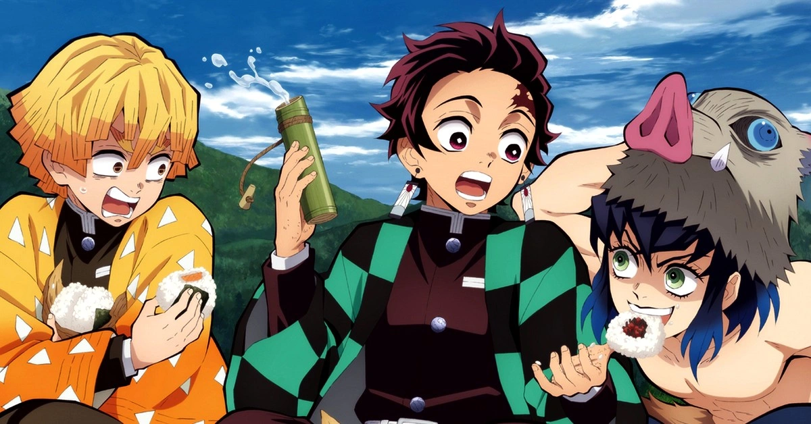
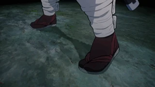
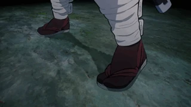
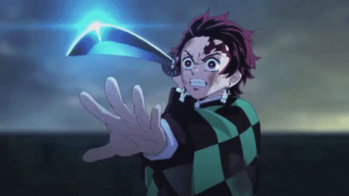
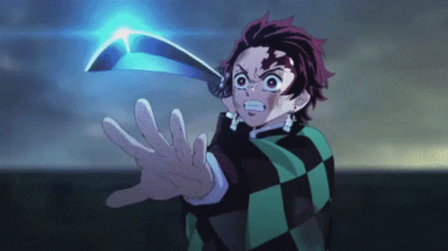

Tanjiro kamado
Historia
Tanjiro era membro de uma família tradicional e muito simples que vivia nas montanhas. Os Kamado
tinham
como sustento a venda de carvão na cidade mais próxima e viviam felizes, sua mãe e 5 irmãos e irmãs
menores.
É durante uma de suas viagens para vender carvão que o jovem tem sua vida mudada para sempre. Ao
retornar para sua casa após dormir uma noite fora, ele encontra sua família dizimada. Uma de suas
irmãs,
Nezuko, sobrevive mas é transformada em um Oni. O responsável pelo massacre é o demônio e
antagonista da
série, conhecido como Muzan.
Na tentativa desesperada de socorrê-la, o garoto acaba sendo atacado por Nezuko, mas consegue conter
sua
irmã. Ela, diferente dos demais demônios, não se alimenta de humanos. Ao decorrer da história,
Tanjiro
passa a carregar Nezuko em uma caixa em suas costas, pois a garota não pode mais se expor à luz do
sol.
Personalidade
Tanjiro é descrito como possuindo olhos muitos gentis e uma personalidade compassiva. É um jovem
determinado que não desiste do que almeja alcançar, com um bom exemplo disso sendo sua busca pela
cura de Nezuko.
Mesmo sendo muito forte, ele não se importa ou se vê mais fraco ao pedir ajuda quando necessita.
Protetor com seus amigos e família, apesar de sua gentileza notável, o garoto possui um limite para
a tolerância quando se trata de covardias.
Talvez sua qualidade mais notável seja a capacidade de ter empatia com qualquer pessoa, inclusive
demônios. Apesar de esse ser um traço nobre de sua personalidade, isso faz com que Tanjiro hesite
antes de desferir seu golpe final em seus oponentes.

Mas com o passar dos anos de trabalho e com a aquisição de experiência, ele se torna mais calculista
e rígido em suas decisões relacionadas à seus inimigos. Sua determinação em defender os mais fracos
o faz enfrentar seus inimigos com respeito e dignidade, mas sem fraquejar.
Ele é inflexível quando se trata de fazer justiça e combater o mal, seja qual for o meio necessário
para erradicar as ameaças.
A jornada de Tanjiro
A jornada de Tanjiro tem como fio principal 2 objetivos: transformar sua irmã novamente em humana e
se vingar do demônio que destruiu sua família. É com esses objetivos que o jovem inicia seu caminho
e em pouco tempo encontra seu primeiro treinador: Urokodaki.
Urokodaki é um homem mascarado que demonstra grande habilidade com manuseio de espadas e um dom
incrível para ensinar e orientar Tanjiro. Depois de um treinamento de 2 anos, o garoto já está
preparado e adquire o domínio sobre a Respiração da Água.


Após o treinamento, o jovem Kamado participa de um processo seletivo para se juntar a uma
organização que caça onis conhecida como Demon Slayer Corps. É esse título de caçador que permite
que Tanjiro possua sua espada e consiga a oportunidade de se aproximar de uma solução para reverter
a transformação de sua irmã.
Com sua aprovação e saída para novas missões, ele encontra dois personagens que futuramente vem a
ser seus amigos e companheiros de jornada: Zenitsu e Inosuke. Com a companhia dos dois amigos, ele
se depara com monstros e demônios extremamente fortes e perigosos.
 

 
